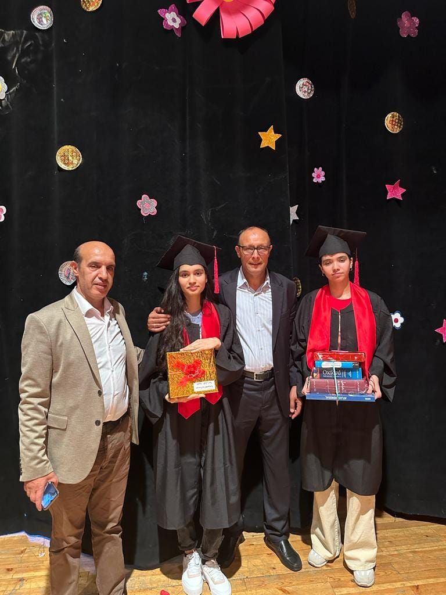

Bienvenue à l'école LINA
Notre école s'engage à fournir une éducation de qualité pour tous nos étudiants.
En savoir plus

Dernières actualités
19.62 مؤسسة لينا الخصوصية ... لحظة تتويج التلميذة آسية فنوش الحاصلة على أعلى معدل بالمديرية الأقليمية مولاي رشيد ..المستوى الثالثة ثانوي إعدادي
Lire la suite